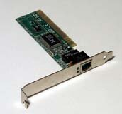

4.4.- Tarjetas de red y direccionamiento MAC.
Ya hemos explicado algo sobre las tarjetas de red, ahora explicaremos algunas de sus características más importantes.
Una tarjeta de red o adaptador de red permite la comunicación con aparatos conectados entre sí y también permite compartir recursos entre dos o más ordenadores. A las tarjetas de red también se les llama NIC del inglés network interface card o en español tarjeta de interfaz de red.
Su función principal es la de permitir la conexión del ordenador a la red, en la tarjeta se graban los protocolos necesarios para que esto suceda. Todas las tarjetas de red tienen grabada la dirección MAC correspondiente. Como ya hemos visto, la dirección MAC esta compuesta de 48 bits y permite identificar a la tarjeta a nivel de enlace de datos. Esta dirección se la conoce como dirección física y es única.

Las tarjetas de red pueden conectarse al equipo utilizando uno de los buses internos, como el PCI, utilizando el bus externo USB, o estar integradas en la placa.
La tarjeta debe determinar la velocidad de la transmisión, la cantidad de información a transmitir, qué protocolos utilizar, y todos los parámetros físicos de la transmisión. Una vez que hace eso, debe transformar la información que le llega a través de la conexión con el ordenador, para poder ser transmitida, esto lo hace convirtiendo la información en una secuencia en serie de bits, convenientemente codificada, para formar una señal eléctrica adecuada al medio de transmisión.
La mayor parte de las tarjetas tiene los mismos componentes, destacamos:
- El procesador principal.
- Un transceptor que es el dispositivo encargado de acceder al medio.
- Un conector Wake on LAN que permite el arranque del ordenador desde otro equipo de la red.
- Indicadores de estado para conocer si está conectado y si está enviando o recibiendo datos.
- Dependiendo de si la tarjeta es para redes cableadas o para inalámbricas, tendremos una conexión RJ-45 hembra o una conexión para antena, ya sea interna o externa.
La instalación y configuración de la tarjeta dependerá del sistema operativo, pero en general, necesitaremos que tenga configurada una dirección IP, que se configure una máscara de red y que se defina una puerta de enlace. Esto lo podrás practicar en las siguientes unidades del módulo.
Para saber más
Recomendamos leer el siguiente artículo sobre las tarjetas, ya que te ayudará a conocerlas mejor.